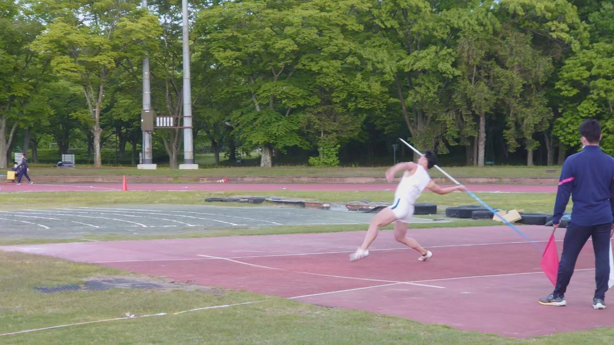
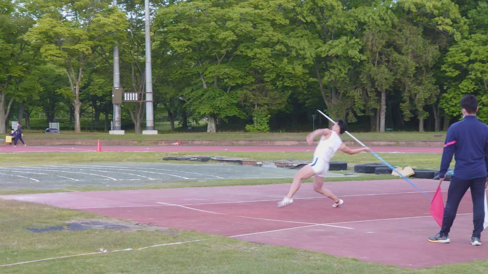

自己紹介
- 名前：山口 泰生 (やまぐち たいせい), Taisei Yamaguchi
- 大学：筑波大学 生物学類 (2023年3月卒)
- 趣味：陸上競技、ウェイトトレーニング、旅行、猫
*Webエンジニア志望のTaiseiです。 大学卒業後、大学院ではなくエンジニアを目指すために留学を決意しました。 常に学習しより良い技術を使うことを意識しています。世界中の人々に価値を提供するWebサービスを開発することを目指しています。
エンジニアを目指したきっかけ
* 研究室で実験結果の解析などプログラミングを使った経験があり、 その利便性に魅了されました。 その中でWeb開発の分野を知り、 エンジニアとしての道に進むことを決意しました。
関心と志向性と目標
* ユーザーに便益をもたらすWebサービスの開発に興味を持ち、 使いやすく価値のあるプロダクトを提供したいと考えています。 バックエンド開発に特に関心があり、 高度なアルゴリズムやデータ処理に挑戦したいと思っています。 また、AIもその便利さゆえに強い興味を抱いています。
部活動 (陸上競技部)
* 部活動では陸上部で競技会の写真判定責任者を務めたほか、 十種競技で全国大会に出場しました。 競技力だけでなく、 チームプレーヤーとしてのリーダーシップも身につけてきました。
研究活動
* 生物学の研究でショウジョウバエのドーパミンと腸内分泌細胞の関連を調査しました。 科学的思考力を養い、 問題解決能力を高める経験をしました
留学経験
* 留学先で慣れない環境でエンジニアを目指すために、 学習とインターンに全力で取り組みました。 新たな文化や言語に触れながら、自己成長を重ねました。


 
